![This picture is about the concept map regarding carbon and its compounds, in this concept map important concepts are as follows carbon and its compounds have following functional groups ether ester carboxylic acids ketones aldehydes alcohols. carbon and its compounds have following daily use alcohol organic acid drugs fuel tyre plastic. carbon and its compounds are classified into two groups 1. open chain compounds they are saturated compounds unsaturated compounds. 2. closed chain compounds they are carbo cyclic compounds and hetero cyclic compounds. carbon and its compounds can name in two ways 1. IUPAC here we use root word, prefix, suffix. 2. common name is obtain from source of the compound.](images/image-171.png)
1. Choose the best answer.
1. The molecular formula of an open chain organic compound is C3H6. The class of the compound is
a. alkane
b. alkene
c. alkyne
d. alcohol
2. The IUPAC name of an organic compound is 3-Methyl butan-1-ol. What type compound it is?
a. Aldehyde
b. Carboxylic acid
c. Ketone
d. Alcohol
3. The secondary suffix used in IUPAC nomenclature of an aldehyde is dash.
a. - ol
b. – oic acid
c. - al
d. - one
4. Which of the following pairs can be the successive members of a homologous series?
a. C3H8 and C4H10
b. C2H2 and C2H4
c. CH4 and C3H6
d. C2H5OH and C4H8OH
5. C2H5OH + 3O2 gives 2CO2 + 3H2O is a
a. Reduction of ethanol
b. Combustion of ethanol
c. Oxidation of ethanoic acid
d. Oxidation of ethanal
6. Rectified spirit is an aqueous solution which contains about dash of ethanol
a. 95.5 %
b. 75.5 %
c. 55.5 %
d. 45.5 %
7. Which of the following are used as anaesthetics?
a. Carboxylic acids
b. Ethers
c. Esters
d. Aldehydes
8. TFM in soaps represents dash content in soap
a. mineral
b. vitamin
c. fatty acid
d. carbohydrate
9. Which of the following statements is wrong about detergents?
a. It is a sodium salt of long chain fatty acids
b. It is sodium salts of sulphonic acids
c. The ionic part in a detergent is –SO–3Na+
d. It is effective even in hard water.
II. Fill in the blanks
1. An atom or a group of atoms which is responsible for chemical characteristics of an organic compound is called dash.
2. The general molecular formula of alkynes is dash.
3. In IUPAC name, the carbon skeleton of a compound is represented by dash. (root word or prefix or suffix)
4. (Saturated or Unsaturated) dash compounds decolourize bromine water.
5. Dehydration of ethanol by conc. Sulphuric acid forms dash. (ethene or ethane)
6. 100 % pure ethanol is called dash.
7. Ethanoic acid turns dash litmus to dash.
8. The alkaline hydrolysis of fatty acids is termed as dash.
9.Biodegradable detergents are made of dash (branched or straight) chain hydrocarbons
III. Match the following
Functional group – OH |
- |
Benzene |
Heterocyclic |
- |
Potassium stearate |
Unsaturated |
- |
Alcohol |
Soap |
- |
Furan |
Carbocyclic |
- |
Ethene |
IV. Assertion and Reason:
Answer the following questions using the data given below:
i) A and R are correct, R explains the A.
ii) A is correct, R is wrong.
iii) A is wrong, R is correct.
iv) A and R are correct, R doesn’t explains A.
1. Assertion: Detergents are more effective cleansing agents than soaps in hard water.
Reason: Calcium and magnesium salts of detergents are water soluble.
2. Assertion: Alkanes are saturated hydrocarbons.
Reason: Hydrocarbons consist of covalent bonds.
5. Short answer questions
1. Name the simplest ketone and give its structural formula.
2. Classify the following compounds based on the pattern of carbon chain and give their structural formula: (1) Propane (ii) Benzene
(iii) Cyclobutane (iv) Furan
3. How is ethanoic acid prepared from ethanol? Give the chemical equation.
4. How do detergents cause water pollution? Suggest remedial measures to prevent this pollution?
5. Differentiate soaps and detergents.
VI. Long answer questions
1. What is called homologous series? Give any three of its characteristics?
2. Arrive at, systematically, the IUPAC name of the compound: CH3–CH2–CH2–OH.
3. How is ethanol manufactured from sugarcane?
4. Give the balanced chemical equation of the following reactions:
(1) Neutralization of NaOH with ethanoic acid.
(ii) Evolution of carbon dioxide by the action of ethanoic acid with NaHCO3.
(iii) Oxidation of ethanol by acidified potassium dichromate.
(iv) Combustion of ethanol.
5. Explain the mechanism of cleansing action of soap.
VII. HOT questions
1. The molecular formula of an alcohol is C4H10O. The locant number of its –OH group is 2.
(1) Draw its structural formula.
(ii) Give its IUPAC name.
(iii) Is it saturated or unsaturated?
2. An organic compound ‘A’ is widely used as a preservative and has the molecular formula C2H4O2. This compound reacts with ethanol to form a sweet smelling compound ‘B’.
(i) Identify the compound ‘A’.
(ii) Write the chemical equation for its reaction with ethanol to form compound ‘B’.
1. Name the process.
REFERENCE BOOKS
1. Organic chemistry - B.S.Bahl & Arun Bahl S.Chand publishers, New delhi.
2. Organic chemistry - R.T.Morrision & R.MN. Boyd - Prentice Hall Publishers. New Delhi
INTERNET RESOURCES https://www.tutorvista.com/
https://www.topperlearning.com/
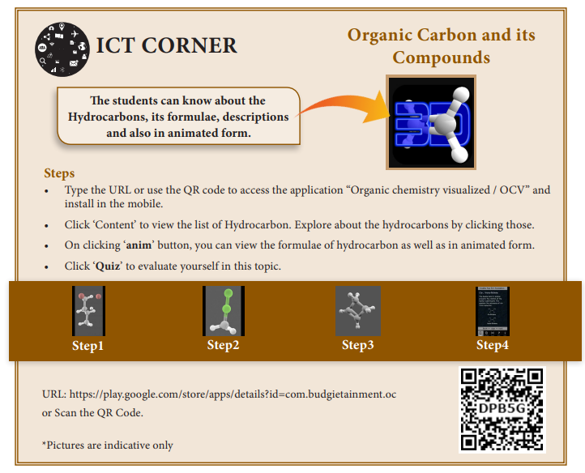
Plants exhibits varying degrees of organization. Atoms are organized into molecules, molecules into organelles, organelles into cells, cells into tissues and tissues into organs. The first account of internal structure of plants was published by English Physician Nehemiah Grew. He is known as Father of Plant Anatomy. Plant anatomy (Gk Ana = as under; Temnein = to cut) is the study of internal structure of plants. You have already studied the different kinds of tissues in IX standard. In this lesson, you will study about the internal structure of plant tissues, process of photosynthesis and respiration.
Tissues are the group of cells that are similar or dissimilar in structure and origin but perform similar function. Plant tissues can be broadly classified into two, based on their ability to divide. They are
Sachs (1875) classified tissue system in plants into three types
The functions of these tissues are given in Table 12.1.
It consists of epidermis, stomata and epidermal outgrowths. Epidermis is the outer most layer.
Minute pores called stomata are present in the epidermis of leaf and stem.
Table 12.1
Tissue system and its functions
Tissue System |
Components |
Functions |
Dermal Tissue System |
Epidermis and Periderm (in older stems and roots) |
• Protection
• Prevention of water loss
|
Ground Tissue System |
Parenchyma tissue Chlorenchyma Collenchyma tissue
Sclerenchyma tissue |
• Food storage
• Photosynthesis
• Support ,Protection
• Support ,rigidity
|
Vascular Tissue System |
Vascular tissues Xylem tissue Phloem tissue |
• Transport of water and minerals
• Transport of food
|
Cuticle is present on the outer wall of epidermis to check evaporation of water. Trichomes and root hairs are the epidermal outgrowths.
Functions:
1 Epidermis protects the inner tissues.
2 Stomata helps in transpiration.
3 Root hairs help in absorption of water and minerals.
It includes all the tissues of the plant body except epidermal and vascular tissues like
1 Cortex
2 Endodermis
3 ericycle
4 Pith
It consists of xylem and phloem tissues. They are present in the form of bundles called vascular bundles. Xylem conducts water and minerals to different parts of the plant. Phloem conducts food materials to different parts of the plant.
There are three different types of vascular bundles namely
1 Radial
2 Conjoint
3 Concentric
Xylem and phloem are present in different radii alternating with each other. Example:roots
Xylem and phloem lie on the same radius. There are two types of con joint bundles.
Xylem lies towards the centre and phloem lies towards the periphery.
When cambium is present in collateral bundles, it is called open. Example:dicot stem
and collateral bundle without cambium is called closed. Example:monocot stem.
In this type of bundle, the phloem is present on both outer and inner side of xylem.
Example:Cucurbita
Vascular bundle in which xylem completely surrounds the phloem or vice versa is called concentric vascular bundle. It is of two types:
Endarch: Protoxylem lies towards the centre and metaxylem lies towards the periphery. Example:stem.
Exarch: Protoxylem lies towards the periphery and metaxylem lies towards the centre. Example:roots.
Figure 12.1 Types of vascular bundle
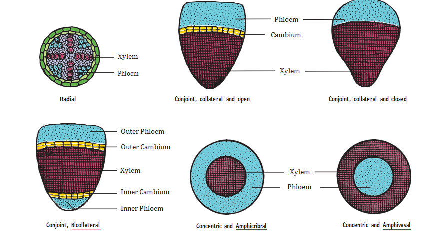
A thin transverse section of dicot root shows the following structures.
1
Epiblema: It is the outermost layer. Cuticle and stomata are absent. Unicellular root hairs are present. It is also known as Rhizodermis or Piliferous layer.
2
Cortex: It is a multi-layered large zone made of thin-walled parenchymatous cells with intercellular spaces. It stores food and water.
3
Endodermis: It is the innermost layer of cortex. The cells are barrel shaped, closely packed, and show band like thickenings on their radial and inner tangential walls called casparian strips. But these
casparian strips are absent in the endodermis cells which are located opposite to the protoxylem. These thin-walled cells without casparian strips are called passage cell. It helps in the movement of water and dissolved salts from cortex into xylem.
4
Stele: All tissues inner to endodermis constitute stele. It includes pericycle and vascular bundle.
1 Pericycle: Inner to endodermis lies a single layer of pericycle. It is the site of origin of lateral roots.
2 Vascular bundle: It is radial. Xylem is exarch and tetrach. The tissue present between xylem and phloem is called conjunctive tissue. In dicot root, it is made up of parenchyma.
3 Pith: Young root contains pith whereas in old root pith is absent.
A thin transverse section of monocot root shows the following characteristic features.
1
Epiblema or Rhizotomies: It is the outermost layer of the root and is made up of single layer of thin walled, parenchymatous cell. Stomata and cuticle are absent. The root hair helps in absorption of water and minerals from the soil. This layer also protects the inner tissues.
Figure 12.2 Transverse section of Dicot root
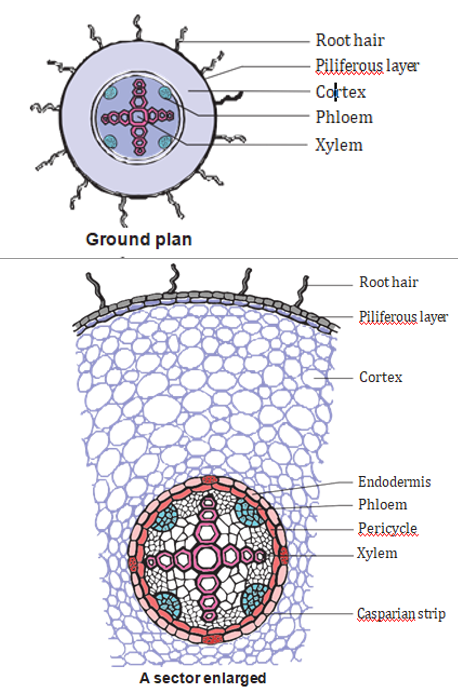
Figure 12.3 Transverse section of Monocot root
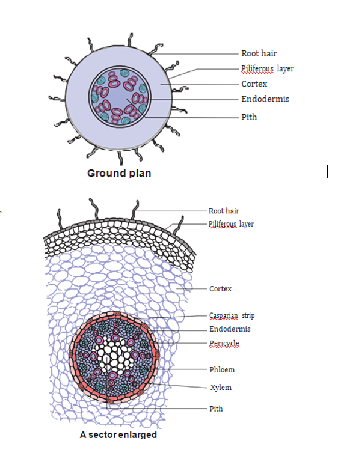
2 Cortex: It is multi-layered large zone, composed of parenchymatous cells with intercellular spaces. It stores water and food material.
3
Endodermis: It is the innermost layer of cortex with characteristic casparian strips and passage cells. Casparian strips are band like thickening made of suberin.
4
Stele: All the tissues inner to endodermis constitute stele. It includes pericycle, vascular tissues and pith.
1 Pericycle: It is a single layer of thin-walled cells. The lateral roots originate from this layer.
2 Vascular tissues: It consists of many patches of xylem and phloem arranged radially. The xylem is exarch and polyarch. The conjunctive tissue is made up of sclerenchyma.
3 Pith: It is present at the center. It is made up of parenchyma cells with intercellular spaces. It contains abundant amount of starch grains. It stores food.
The transverse section of a dicot stem reveals the following structures.
1
Epidermis: It is the outermost layer. It is made up of single layer of parenchyma cells, its outer wall is covered with cuticle. It is protective in function.
2
Cortex: - It is divided into three regions:
1 Hypodermis: It consists of 3 - 6 layers of collenchyma cells. It gives mechanical support.
Table 12.2 Differences between Dicot and Monocot root
Serial Number. |
Tissues |
Dicot Root |
Monocot Root |
1 |
Number of Xylem |
Tetrarch |
Polyarch |
2 |
Cambium |
Present (During secondary growth only) |
Absent |
3 |
Secondary Growth |
Present |
Absent |
4 |
Pith |
Absent |
Present |
5 |
Conjunctive tissue
|
Parenchyma Example: bean |
Sclerenchyma Example: Maize |
2 Middle cortex: It is made up of few layers of chlorenchyma cells. It is involved in photosynthesis due to the presence of chloroplast.
3 Inner cortex: It is made up of few layers of parenchyma cells. It helps in gaseous exchange and stores food materials.
Endodermis is the inner most layer of cortex. It consists of a single layer of barrel shaped cells; these cells contain starch grains. So, it is also called starch sheath.
3 Stele: The central part of the stem inner to endodermis is known as stele. It consists of pericycle, vascular bundle and pith.
1 Pericycle: It occurs between vascular bundle and endodermis. It is multi-layered, parenchymatous with alternating patches of sclerenchyma.
2 Bundle cap: There is a patch of hard Sclerenchyma tissue outside the phloem of vascular bundle is called Bundle cap.
3 Vascular bundle: Vascular bundles are con joint, collateral, end arch and open. They are arranged in the form of a ring around the pith.
4 Pith: The large central parenchymatous zone with intercellular spaces is called pith. It helps in the storage of food materials.
A transverse section of monocot stem reveals the following structures.
(1). Epidermis: It is the outermost layer. It is made up of single layer of parenchyma cells. It is covered with thick cuticle. Multicellular hairs are absent, and stomata are also less in number.
(2). Hypodermis: It is made up of few layers of sclerenchyma cells interrupted by chlorenchyma. Sclerenchyma provides mechanical support to plant.
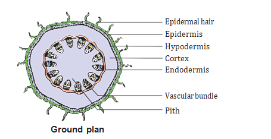
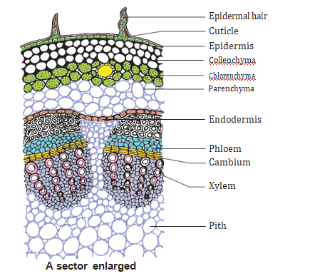
Figure 12.4 Transverse section of Dicot stem
(3). Ground tissue: The entire mass of parenchyma cells next to hypodermis and extending to the centre is called ground tissue. It is not differentiated into endodermis, cortex, pericycle and pith.
Figure 12.5 Transverse section of Monocot stem
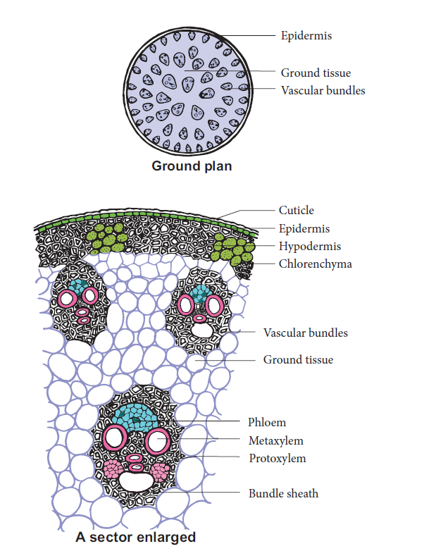
(4). Vascular Bundle: Vascular bundles are skull shaped and scattered in the ground tissue. Vascular bundles are con joint, collateral, end arch and closed. Each vascular bundle is surrounded by few layers of sclerenchyma cells called bundle sheath.
(a) Xylem: It consists of metaxylem and protoxylem. Xylem vessels are arranged in V or Y shape. In mature vascular bundle, the lower most protoxylem disintegrates and form a cavity. This is called protoxylem lacuna.
(b) Phloem: It consists of sieve tube elements and companion cells. Phloem parenchyma, and phloem Fibres are absent.
(5). Pith: Pith is not differentiated in monocot stems.
Table 12.3 Differences between Dicot stem Example: Sunflower and Monocot Stem Example: Maize
Serial Number |
Tissues |
Dicot Stem |
Monocot Stem |
1 |
Hypodermis |
Collenchymatous |
Sclerenchymatous |
2 |
Ground tissue |
Differentiated into cortex, endodermis, pericycle and pith |
Undifferentiated |
3 |
Vascular bundles |
1 Less in number 2 Uniform in size 3 Arranged in a ring 4 Open (Cambium present) 5 Bundle sheath absent |
1 Numerous 2 Smaller near periphery, bigger in the center 3 Scattered 4 Closed(Cambium absent) 5 Bundle sheath present |
4 |
Secondary growth |
Present |
Mostly absent |
5 |
Pith |
Present |
Absent |
6 |
Medullary rays |
Present |
Absent |
The transverse section of leaf shows the following structures.
1 Upper epidermis: This is the outermost layer made of single layered parenchymatous cells without intercellular spaces. The outer wall of the cells is cuticularized. Stomata are less in number.
Figure 12.6 Transverse section of Dicot leaf
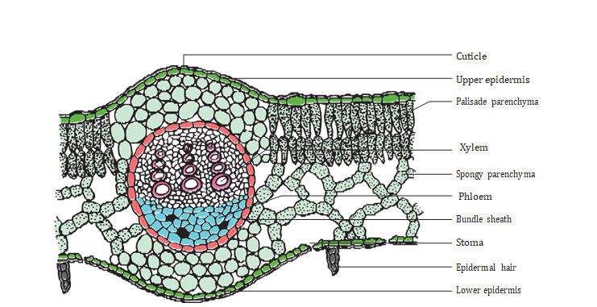
2 Lower epidermis: It is a single layer of parenchymatous cells with a thin cuticle. It contains numerous stomata. Chloroplasts are present only in guard cells. The lower epidermis helps in the exchange of gases. The loss of water vapour is facilitated through this chamber.
3 Mesophyll: The tissue present between the upper and lower epidermis is called mesophyll. It is differentiated into Palisade parenchyma and Spongy parenchyma.
a) Palisade parenchyma: It is found just below the upper epidermis. The cells are elongated. These cells have more number of chloroplasts. The cells do not have intercellular spaces and they take part in photosynthesis.
b) Spongy parenchyma: It is found below the palisade parenchyma tissue. Cells are almost spherical or oval and are irregularly arranged. Cells have intercellular spaces. It helps in gaseous exchange.
(4Vascular bundles: Vascular bundle are present in mid-rib and lateral veins. Vascular bundles are con joint, collateral and closed. Each vascular bundle is surrounded by a sheath of parenchymatous cells called bundle sheath. Each vascular bundle consists of xylem lying towards the upper epidermis and phloem towards the lower epidermis.
The transverse section of a monocot leaf reveals the following structures.
(1) Epidermis: Monocot leaf has upper and lower epidermis. Epidermis is made up of parenchyma cells. Cuticle is present on the outer wall stomata are present on both upper and lower epidermis. Some cells of upper epidermis are large and thin walled they are known as bulliform cells.
(2) Mesophyll: It is the ground tissue that is present between both epidermal layers. Mesophyll is not differentiated into palisade and spongy parenchyma. The cells are irregularly arranged with inter-cellular spaces. These cells contain chloroplasts.
(3) Vascular bundles: large number of vascular bundles are present, some of which are small, and some are large. Each vascular bundle is surrounded by parenchymatous bundle sheath. Vascular bundles are con joint, collateral and closed. Xylem is present towards upper epidermis and phloem towards lower epidermis.
Figure 12.7 Transverse section of Monocot Leaf
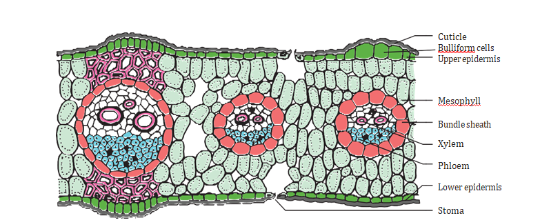
Table 12.4 Differences between Dicot and Monocot Leaf
Serial Number. |
Dicot Leaf |
Monocot Leaf |
1 |
Dorsiventral leaf |
Isobilateral leaf |
2 |
Mesophyll is differentiated Into palisade and Spongy parenchyma |
Mesophyll is not differentiated into palisade and spongy parenchyma |
Plastids are double membrane bound organelles found in plants and some algae. They are responsible for preparation and storage of food. There are three types of plastids.
Chloroplast - green coloured plastids
Chromoplast - yellow, red, orange-coloured plastids
Leucoplast - colourless plastids
Chloroplasts are green plastids containing green pigment called chlorophyll. Chloroplasts are oval shaped organelles having a diameter of 2-10 micrometre and a thickness of 1-2 micrometre.
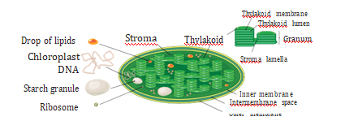
Figure 12.8 Ultrastructure of Chloroplast
(1). Envelope: Chloroplast envelope has outer and inner membranes which is separated by intermembrane space.
(2). Stroma: Matrix present inside to the membrane is called stroma. It contains DNA, 70 S ribosomes and other molecules required for protein synthesis.
(3). Thylakoids: It consists of thylakoid membrane that encloses thylakoid lumen. Photosynthetic pigments are present in Thylakoids. Thylakoids forms a stack of disc like structures called a granum (singular-granum).
(4). Grana: Thylakoids are arranged in the form of discs stacked one above the other called granum Grana, are interconnected by stroma lamellae.
Photosynthesis (Photo = light; synthesis = to build) is a process by which autotrophic organisms like green plants, algae and chlorophyll containing bacteria utilize the energy from sunlight to synthesize their own food. In this process, carbon dioxide combines with water in the presence of sunlight and chlorophyll to form carbohydrates. During this process oxygen is released as a by-product.
Carbon dioxide + Water gives Glucose + water + Oxygen (In the presence of light and chlorophyll)
Photosynthesis occurs in all green parts of the plant especially in green leaves.
Pigments involved in photosynthesis are called Photosynthetic pigments. Photosynthetic pigments are of two classes namely, the primary pigments and accessory pigments. chlorophyll (a )is the primary pigment that traps solar energy and converts it into electrical and chemical energy. Thus, it is called the reaction centre. Other pigments such as chlorophyll b and carotenoids are called accessory pigments as they pass on the absorbed energy to chlorophyll a (Chl.a) molecule. Reaction centres (primary pigments and harvesting centre) (accessory pigments) together form photo systems.
The entire process of photosynthesis takes place inside the chloroplast. The structure of chloroplast is such that the light dependent (Light reaction) and light independent (Dark reaction) take place at different sites in the organelle
This was discovered by Robin Hill (1939). This reaction takes place in the presence of light energy in thylakoid membranes (grana) of the chloroplasts. Photosynthetic pigments absorb the light energy and convert it into chemical energy ATP and NADPH+H+. These products of light reaction move out from the thylakoid to the stroma of the chloroplast.
More to Know
ATP |
Adenosine Triphosphate |
ADP |
Adenosine Diphosphate |
N A D |
Nicotinamide Adenine Dinucleotide |
N A D P |
Nicotinamide Adenine Dinucleotide Phosphate |
Do you Know?
A cell cannot get its energy directly from glucose. So, in respiration the energy released from glucose is used to make ATP (Adenosine Triphosphate)
Dark reaction or biosynthetic pathway takes place in stroma. During this reaction C O2 is reduced into carbohydrates with the help of light generated ATP and N A DPH+H+. This is also called as Calvin cycle and is carried out in the absence of light. It is called dark reaction.
In Calvin cycle the inputs are CO2 from the atmosphere and the ATP and NADPH+H+ produced from light reaction.
Figure 12.9 Overview of Hill and Calvin cycle
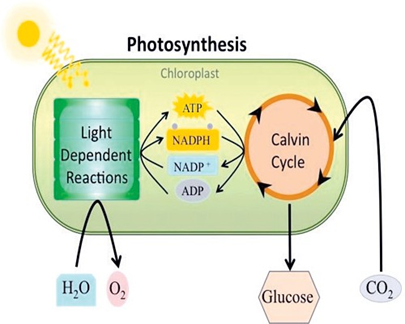
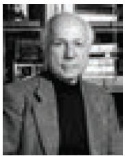
Melvin Calvin, an American biochemist, discovered chemical pathway for photosynthesis. The cycle is named as Calvin cycle. He was awarded with Nobel Prize in the year 1961 for his discovery.
1 Pigments
2 Leaf age
3 Accumulation of carbohydrates
4 Hormones
1 Light
2 Carbon dioxide
3 Temperature
4 Water
5 Mineral elements
Info bit
Artificial photosynthesis is a method for producing renewable energy by the use of sunlight. Indian scientist C.N.R. Rao who was conferred the Bharat Ratna (2013) is also working on similar technology of artificial photosynthesis to produce - Hydrogen fuel (renewable energy).
Mitochondria are filamentous or granular cytoplasmic organelles present in cells. The mitochondria were first discovered by Kolliker in 1857 as granular structures in striated muscles. Mitochondria (singular: mitochondrion) are organelles within eukaryotic cells that produce adenosine triphosphate (ATP) which form the energy currency of the cell, for this reason, the mitochondria is referred to as the “Powerhouse of the cell”. Mitochondria vary in size from 0.5 mew m to 2.0 mew m.
Mitochondria contain 60-70% protein, 25-30% lipids, 5-7% RNA and small amount of DNA and minerals.
Mitochondrial Membranes: It consists of two membranes called inner and outer membrane. Each membrane is 60 to 70 Angstrom thick. Outer mitochondrial membrane is smooth and freely permeable to most small molecules. It contains enzymes, proteins and lipids. It has porin molecules (proteins) which form channels for passage of molecules through it.
Inner mitochondrial membrane is semi permeable membrane and regulates the passage of materials into and out of the mitochondria. It is rich in enzymes and carrier proteins. It consists of 80% proteins and lipids.
Figure 12.10 Structure of Mitochondria
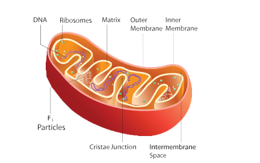
Cristae: The inner mitochondrial membrane gives rise to finger like projections called cristae. These cristae increase the inner surface area (fold in inner membrane) of the mitochondria to hold variety of enzymes.
Oxysomes: The inner mitochondrial membrane bear minute regularly spaced tennis racket shaped particles known as oxysomes (F1particle). They involve in ATP synthesis.
Figure 12.11 Structure of Oxysomes
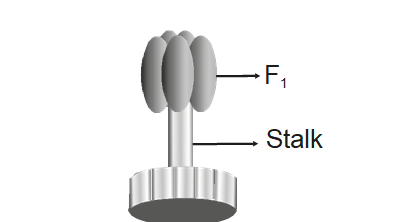
Mitochondrial matrix - It is a complex mixture of proteins and lipids. Matrix contains enzymes for Krebs cycle, mitochondrial ribosomes (70 S), tRNAs and mitochondrial DNA.
Mitochondria is the main organelle of cell respiration. They produce a large number of ATP molecules.
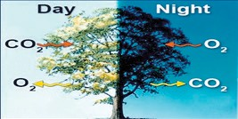
Respiration involves exchange of gases between the organism and the external environment. The plants obtain oxygen from their environment and release carbon dioxide and water vapour. This exchange of gases is known as external respiration. It is a physical process. Biochemical process occurs within cells where the food is oxidized to obtain energy, this is known as cellular respiration.
Aerobic respiration is the type of cellular respiration in which organic food is completely oxidized with the help of oxygen into carbon dioxide, water and energy. It occurs in most plants and animals.
a.
Glycolysis (Glucose splitting):
It is the breakdown of one molecule of glucose (6 carbon) into two molecules of pyruvic acid (3 carbon). Glycolysis takes place in cytoplasm of the cell. It is the first step of both aerobic and anaerobic respiration.
b.
Krebs Cycle: This cycle occurs in mitochondria matrix. At the end of glycolysis, 2 molecules of pyruvic acid enter into mitochondria. The oxidation of pyruvic acid into C O2 and water takes place through this cycle. It is also called Tricarboxylic Acid Cycle (TCA).
c.
Electron Transport Chain: This is accomplished through a system of electron carrier complex called electron transport chain (E T C) located on the inner membrane of the mitochondria. NADH+H+ and FADH2 molecules formed during glycolysis and Krebs cycle are oxidised to N A D+ and F A D to release the energy via electrons. The electrons, as they move through the system, release energy which is trapped by ADP to synthesize ATP. This is called oxidative phosphorylation. In this process, O2 the ultimate acceptor of electrons gets reduced to water.
Anaerobic respiration takes place without oxygen. Glucose is converted into ethanol
(Ethanol fermentation by yeast) or lactic acid (lactic acid fermentation by bacteria).
Respiratory quotient is the ratio of volume of carbon dioxide liberated and the volume of oxygen consumed during respiration. It is expressed as
RQ = Volume of CO2 liberated by Volume of O2 consumed.